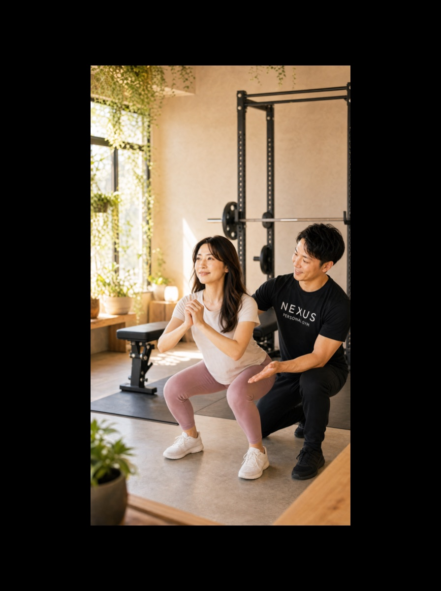
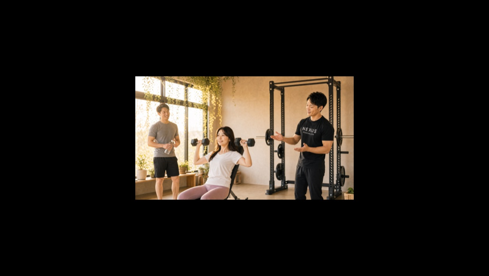
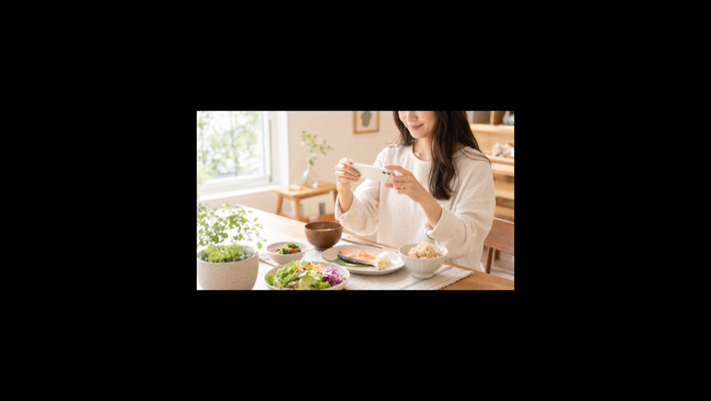
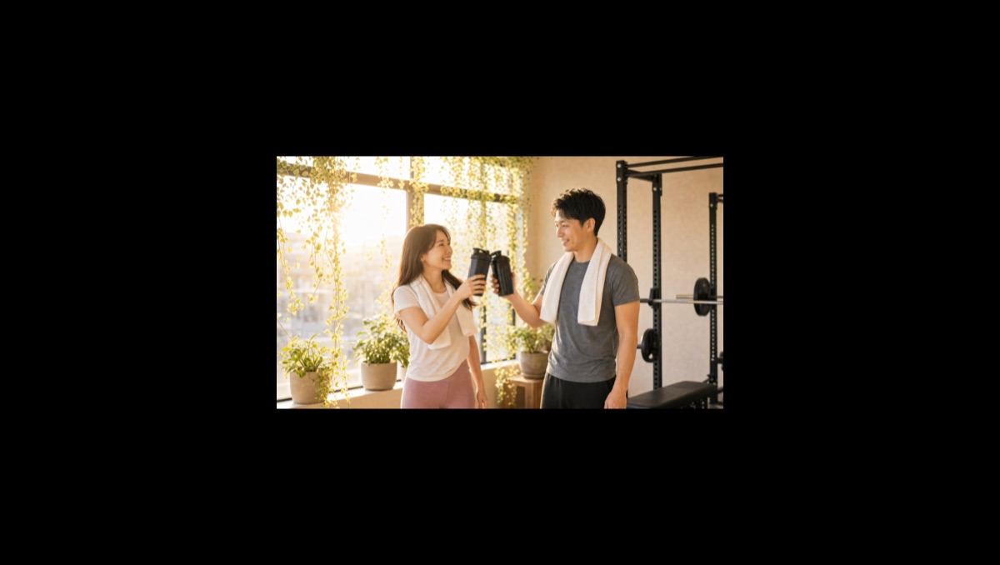

NEXUS Personal Gym ／ 大阪府豊中市
NEXUSパーソナルジム 大阪豊中店｜豊中の完全個室・隠れ家ジム
阪急宝塚線 豊中駅からすぐ、豊中市本町の完全個室パーソナルジムです。「週末の趣味を、本気で楽しむための身体」を軸に、ゴルフ・スノボ・登山・テニスなど週末をアクティブに過ごす方の身体づくりから夫婦での減量まで、幅広い目的に応える指導が支持され、Google口コミ★4.9（148件）——NEXUS全店でも最多クラスの口コミ数をいただいています。
- 完全個室
- 趣味のパフォーマンス向上
- 阪急宝塚線 豊中駅
- 毎日8:00〜23:00
- 手ぶら通いOK

この店舗の特徴
NEXUS大阪豊中店は、阪急宝塚線 豊中駅近く・豊中市本町にある完全個室パーソナルジム。落ち着いた住宅都市・豊中で、週末をアクティブに過ごす大人の方に選ばれています。目的は「痩せる」だけではありません。ゴルフの飛距離を伸ばしたい、今シーズンのスノボで思い切り滑りたい、登山で膝を痛めず長く歩きたい——趣味のパフォーマンスを上げるための身体づくりを得意としています。もちろんご夫婦での減量や体型維持にも対応。ウェア・タオル・プロテインまで無料提供の手ぶら通いOK、毎日8:00〜23:00営業で、平日の仕事帰りから週末の早朝まで通えます。料金は1回4,500円〜（ライトコース30分・月4回18,000円）から始められます。
趣味がうまくなる筋トレ

大阪豊中店の一番の魅力は、「趣味がうまくなる身体」をつくれることです。実際に、「スノーボードのために体幹中心のトレーニングを続けたら、バランスと下半身の安定感が別物になり、今シーズンが楽しみ」という会員の声があります。体幹と下半身が安定すると、板の上での重心移動が思いどおりになり、疲れにくくもなります。この考え方は、他の趣味にも横展開できます。ゴルフなら回旋のパワーと軸の安定で飛距離が伸び、登山なら下半身の強化で下りの膝が守られ、テニスなら切り返しのキレが増す。「何のために鍛えるか」がはっきりしているから、トレーニングそのものが楽しくなります。あなたの週末の趣味を教えてください。その競技で使う動きから逆算して、メニューを設計します。
スノーボード上達のために体幹を鍛えたところ、バランスと下半身の安定感が大きく向上しました。今シーズンの滑りが本当に楽しみです。
夫婦で通うと、続く

「一人だと三日坊主になってしまう」——そんな方にこそ、ご夫婦での通いをおすすめしています。大阪豊中店の口コミには「夫婦で週2回通い、食事アドバイスも受けて4kg減。励まし合えるのが続く理由」という声があります。お互いにサボりにくく、家庭の食事も一緒に整えられるのがペアトレの強み。同じ目標を共有できるので、会話も増え、休日の過ごし方まで前向きになったというご夫婦もいらっしゃいます。セミパーソナル（2名同時）は60分・月2回で11,000円（税込・1回5,500円）から。ご夫婦・ご家族・ご友人と、一緒に始めてみませんか。
夫婦で週2回通い、食事も見直して4kg減りました。その日の体調に合わせて調整してもらえるので、無理なく続けられています。
外食があっても整えられる食事指導

週末に趣味を楽しむ方は、外食や会食の機会も多いもの。だからこそ大阪豊中店では、「食べない」ではなく「どう食べるか」を整える食事指導を大切にしています。口コミでも「外食時も調整しやすい自立型の食事アドバイス」が好評です。写真を送るだけのAI食事指導（月額3,000円・税込）を使えば、外食のメニュー選びやお酒との付き合い方まで具体的なアドバイスが届きます。ゴルフ帰りの一杯も、旅行先のごちそうも、我慢しきりでは続きません。楽しみは楽しみとして残しながら、前後の食事で帳尻を合わせる——そんな自立した食習慣が身につきます。
東京の会員も出張先に選ぶ店舗
NEXUSの会員は、全国約70店舗のどこでも利用できます。大阪豊中店には、こんな声もいただいています。「普段は東京店を利用しているが、豊中出張のたびに月1〜2回通っている。店舗間の連携が良く、複数店を使っても安心」。会員情報や目標が店舗をまたいで共有されるので、出張先でもいつもと同じ感覚でトレーニングを続けられます。旅先や帰省先でトレーニングが途切れてしまう——そんな心配がいりません。豊中を拠点にしつつ、東京や他エリアでも継続したい方、逆に他エリアの会員で豊中に来られる機会がある方にも、このネットワークは大きな安心材料になります。全国約70店舗（80店舗までオープン予定）へと広がるNEXUSだからこそ、続けやすさが違います。
トレーニング後まで楽しい

大阪豊中店は、トレーニングそのものだけでなく「通う時間」まで楽しめる店舗づくりを心がけています。プロテインは無料提供、ウェア・タオル・水まで揃うので手ぶらでOK。追い込んだ後の一杯を、二人で、あるいは自分へのご褒美として味わう——そんなひとときが、次も来たいという気持ちにつながります。仕事帰りにバッグひとつで立ち寄れる気軽さと、やり切った後の達成感。趣味のための身体づくりも、夫婦での習慣づくりも、「楽しいから続く」が一番です。まずは無料体験で、その雰囲気を確かめにいらしてください。
無料体験の流れ
初めての方は、まず無料体験へ。ご予約後、来店したらカウンセリングで目標（趣味のパフォーマンス向上・減量・体型維持など）や現在の体型、生活リズム、運動歴、取り組んでいるスポーツをうかがいます。そのうえで実際のトレーニングを体験し、フォームや効かせ方を確かめていただきます。相性や雰囲気を確かめてから決めていただけるので、当日入会で入会金が通常55,000円→15,000円（税込）に割引。無理な勧誘は一切ありません。阪急宝塚線 豊中駅すぐなので、お買い物やお出かけのついでに、まずは話だけでも気軽にお越しください。
料金プラン
入会金は通常55,000円、無料体験当日入会で15,000円（税込）に割引。AI食事指導は月額3,000円（税込）。全店舗共通の料金です。
アクセス
- 店舗名
- NEXUSパーソナルジム 大阪豊中店
- 住所
- 〒560-0021
大阪府豊中市本町3-8-52 キャトルセゾン豊中本町102号 - 最寄り駅
- 阪急宝塚線 豊中駅
- 営業時間
- 毎日 8:00〜23:00
- 電話番号
- 050-1790-8496
Google口コミ★4.9（148件）
NEXUS大阪豊中店はGoogle口コミ148件・★4.9。これはNEXUS全店でも最多クラスの口コミ数です。スポーツのための身体づくりから夫婦での減量まで、幅広い目的に応える指導が評価されています。
※お客様の声はGoogle口コミの内容を要約して掲載しています。出典：Google マップ
筋トレが続かないタイプでしたが、支えの手厚さと分かりやすい食事アドバイスのおかげで、鏡を見るのが楽しみになりました。
大阪豊中店のよくある質問
Q豊中でゴルフやスノーボードのための体づくりはできますか？+
Q夫婦で一緒に通うことはできますか？+
Q曽根店・服部天神店との違いは何ですか？+
よくある質問（全店共通）
料金・制度などNEXUS全店に共通するご質問です。さらに詳しくは110問のFAQをご覧ください。
Q料金はいくらですか？+
Q手ぶらで通えますか？+
Qキャンセルはいつまでできますか？+
Q食事指導はありますか？+
Qトレーナーはどんな人ですか？+
NEXUSパーソナルジム公式サイトを見る